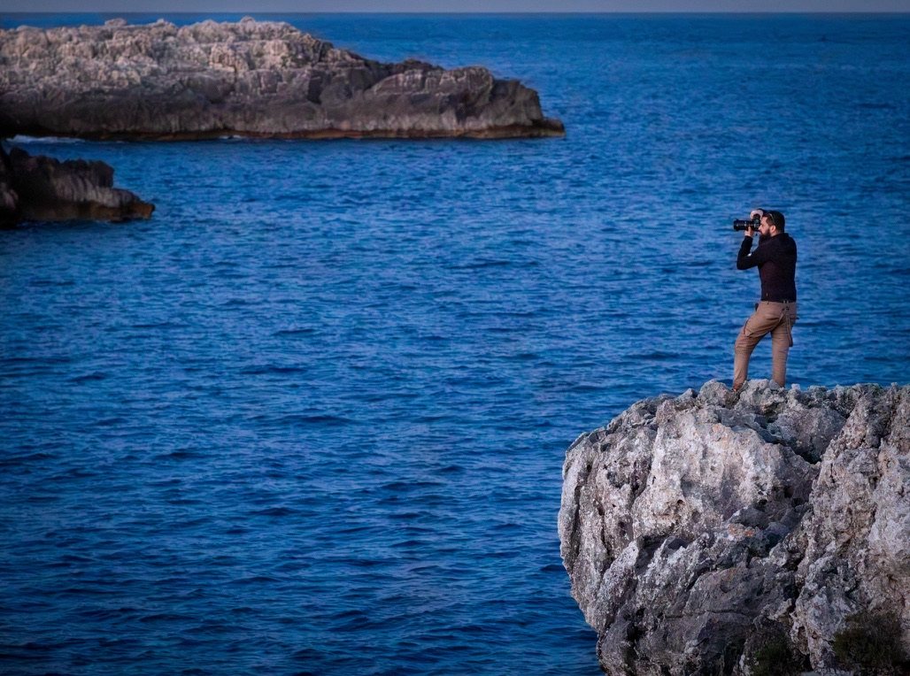

Cattura l'Essenza di Ogni Momento con Physis Studio
La Fotografia come Arte, la Vita come Ispirazione
Benvenuti nel mondo di Physis Studio, dove ogni scatto racconta una storia unica e irripetibile. Specializzato in una vasta gamma di servizi fotografici, il mio obiettivo è quello di immortalare emozioni genuine e momenti preziosi che durano per sempre.
Perché Scegliere Physis Studio?
- Passione e Creatività: Ogni foto è un'opera d'arte, frutto di passione e di un occhio attento ai dettagli.
- Esperienza e Professionalità: Con anni di esperienza nel settore, garantisco un servizio impeccabile e risultati straordinari.
- Tecnologia Avanzata: Utilizzo attrezzature all'avanguardia per assicurare immagini di altissima qualità.
- Personalizzazione: Ogni servizio fotografico è personalizzato per riflettere la vostra unicità e le vostre esigenze.
Servizi Offerti:
- Ritratti Individuali, Famiglie, Coppie, Gruppi: Cattura l'essenza di te stesso e delle persone a te care con ritratti che rivelano la vostra personalità unica.
- Compleanni, Matrimoni, Battesimi, Comunioni: Immortala i momenti più importanti della tua vita con fotografie che raccontano l’amore, la gioia e la celebrazione.
- Aziende: Fotografie professionali per il tuo business, ideali per siti web, brochure, prodotti, pubblicità e profili social aziendali.
- Reportage e Eventi: Documenta ogni momento significativo di eventi speciali, conferenze, manifestazioni e altro ancora, con uno stile autentico e coinvolgente.
- Accompagnamento Fotografico: Segui i tuoi progetti personali o professionali con un servizio fotografico continuo che racconta la tua storia nel tempo.
=> NUOVO!!! Accompagnamento fotografico turistico: Sei in visita a Lecce e vuoi immortalare ogni momento senza preoccuparti di scattare le foto? Con l’accompagnamento fotografico, ti offro un servizio unico: ti accompagnerò nelle tue visite turistiche, catturando ogni istante con fotografie professionali.
Vivi appieno la bellezza di Lecce mentre io mi occupo di creare ricordi indimenticabili. Dalle maestose chiese barocche ai vicoli pittoreschi, ogni dettaglio sarà immortalato con cura e maestria.
La Mia Promessa:
Ogni servizio che offro è guidato dalla mia dedizione per la qualità e dalla mia attenzione ai dettagli. Mi impegno a creare un ambiente rilassato e confortevole durante le sessioni fotografiche, permettendo a chiunque di sentirsi a proprio agio e di esprimere al meglio la propria personalità.
Testimonianze dei Clienti:
"Le foto del nostro matrimonio sono semplicemente magiche. Physis Studio ha catturato ogni emozione con una delicatezza incredibile." - Maria e Luca
"Il servizio fotografico di famiglia è stato meraviglioso. Physis Studio ha saputo mettere tutti a proprio agio e le foto sono stupende." - Famiglia Rossi
Prenota Ora:
Non perdere l'occasione di rendere eterni i tuoi momenti più belli. Contattami oggi per una consulenza gratuita e scopri come posso trasformare i tuoi ricordi in immagini indimenticabili.

Chi sono
Chi sono
Mi chiamo Matt e sono un fotografo professionista svizzero con una passione innata per catturare l'essenza di ogni momento. Dopo aver sviluppato la mia esperienza nel settore in Svizzera, mi sono trasferito in Salento, portando con me la mia visione unica e la mia dedizione per la fotografia. Da quando ho impugnato la mia prima macchina fotografica, ho capito che la fotografia non è solo un lavoro, ma un modo di raccontare storie, di fermare il tempo e di immortalare emozioni autentiche.
La Mia Filosofia
Credo che ogni scatto debba trasmettere un'emozione, raccontare una storia e riflettere la vera essenza del soggetto. La mia missione è creare immagini che parlino da sole, che siano capaci di evocare ricordi preziosi e di far rivivere momenti speciali.
Il Mio Percorso
Con anni di esperienza nel settore in Svizzera, ho avuto il privilegio di lavorare con una vasta gamma di clienti, dalle famiglie che desiderano conservare i loro ricordi più cari, alle coppie che celebrano l'amore, fino alle aziende che vogliono presentarsi al meglio. Ho affinato la mia tecnica attraverso studi, workshop e, soprattutto, tanta pratica sul campo, sempre spinto dalla voglia di migliorare e di esplorare nuovi orizzonti creativi.
